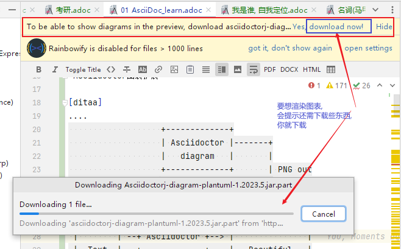
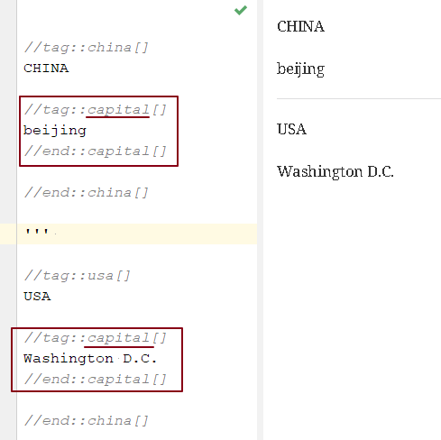
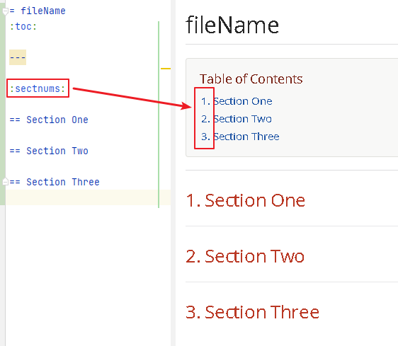
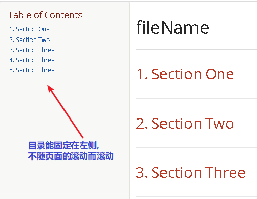
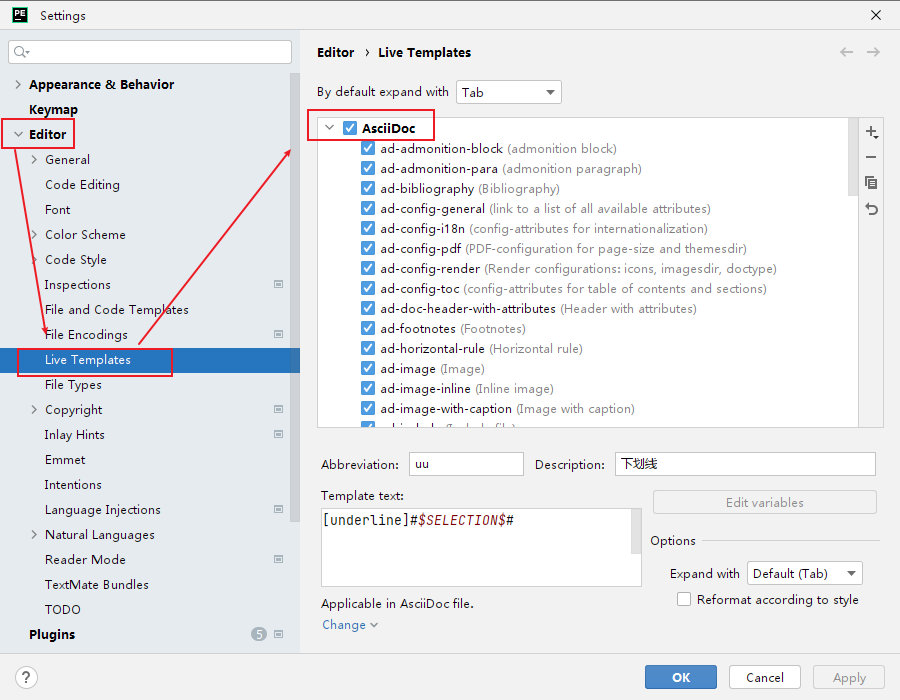
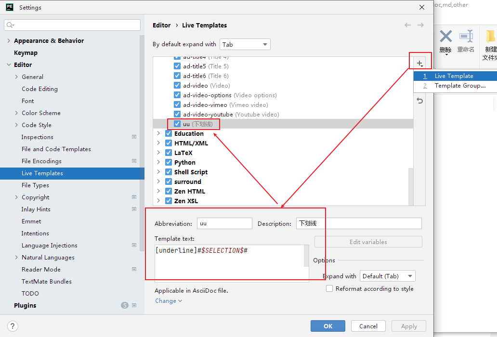
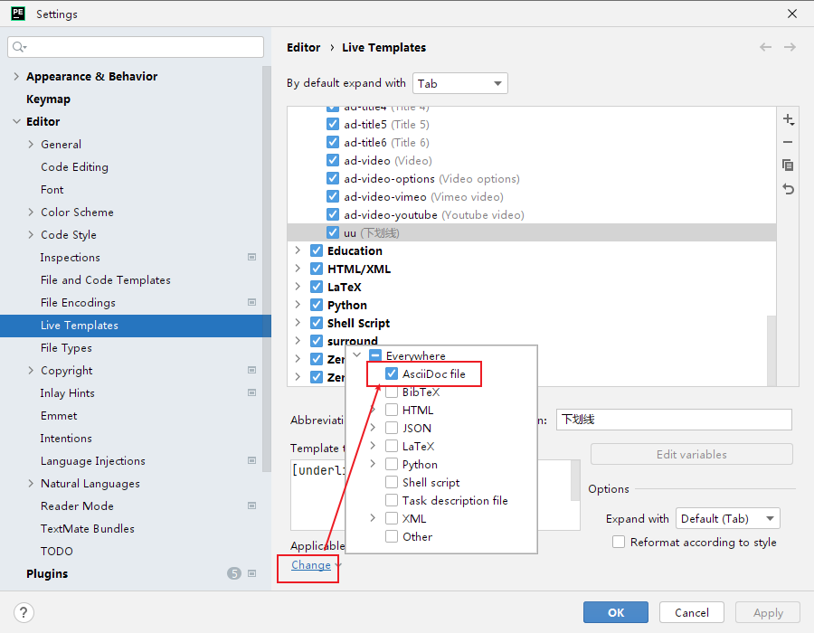
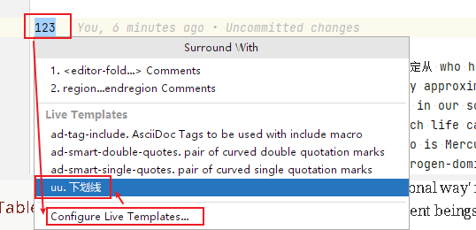
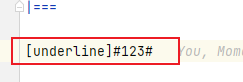
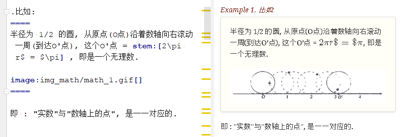

1. 让 asciidoc支持数据图 → 安装 Asciidoctor图表扩展
Asciidoctor图表扩展, 官网
https://docs.asciidoctor.org/diagram-extension/latest/
安装方式:
1.首先，你需要安装Ruby和RubyGems.
2.在 cmd中, 输入命令 gem install asciidoctor-diagram 来安装Asciidoctor图表扩展。
-
输入下面的代码, 来做实验:
[ditaa]
+-------------+
| Asciidoctor |-------+
| diagram | |
+-------------+ | PNG out
^ |
| ditaa in |
| v
+--------+ +--------+----+ /---------------\
| | --+ Asciidoctor +--> | |
| Text | +-------------+ | Beautiful |
|Document| | !magic! | | Output |
| {d}| | | | |
+---+----+ +-------------+ \---------------/
: ^
| Lots of work |
+-----------------------------------+
渲染效果如下:
+-------------+
| Asciidoctor |-------+
| diagram | |
+-------------+ | PNG out
^ |
| ditaa in |
| v
+--------+ +--------+----+ /---------------\
| | --+ Asciidoctor +--> | |
| Text | +-------------+ | Beautiful |
|Document| | !magic! | | Output |
| {d}| | | | |
+---+----+ +-------------+ \---------------/
: ^
| Lots of work |
+-----------------------------------+
如果提示还需下载什么文件才能支持渲染, 就下载它们.

其他的图表类型还有:
▼
class BlockProcessor class DiagramBlock class DitaaBlock class PlantUmlBlock BlockProcessor <|-- DiagramBlock DiagramBlock <|-- DitaaBlock DiagramBlock <|-- PlantUmlBlock
▼
2. "画图表"支持: asciidoctor-kroki
asciidoc diagram 和 kroki 有什么区别?
Asciidoctor Diagram是一组Asciidoctor扩展，它们允许你将使用纯文本描述的图表添加到AsciiDoc文档中。这些扩展支持多种图表语法，包括PlantUML，Graphviz，Ditaa和Shaape等。每个扩展都运行图表处理器以根据输入文本生成SVG、PNG或TXT文件。然后将生成的文件插入转换后的文档中。
Kroki是一个开源项目，它提供了一个Web API来将各种图表描述语言转换为图像。Kroki支持多种图表语言，包括PlantUML，Graphviz，Mermaid和Vega等。
总之，Asciidoctor Diagram和Kroki都可以用来在AsciiDoc文档中绘制图表。Asciidoctor Diagram是一组Asciidoctor扩展，它们在本地运行图表处理器来生成图像。而Kroki则提供了一个Web API来将图表描述语言转换为图像。
3. AsciidocFX 编辑器
4. 官方文档
5. 自定义css, 来取代 asciidoc 默认的样式
(1).在和你的 asciidoc文件的 同目录中, 创建css文件, 比如起名叫 my-stylesheet.css
css内容比如如下:
body {
color: #ff0000;
}
(2).将 :stylesheet: my-stylesheet.css 这句话, 添加到你的asciidoc文档标题中.
= 方法论 :stylesheet: my-stylesheet.css ← 写在这里 :toc: left :toclevels: 3 :sectnums:
6. 修改asciidoc自带的默认css样式
7. ★ 插入 latex 代码
官方文档
7.1. 单行用 stem:[] 包围 LaTex 语法, 多行则包在 "反斜杠(\)begin{align*} 和 "\end{align*}" 里面.
单行公式, 有两种写法:
stem:[latex公式] latexmath:[latex公式]
多行公式, 也有两种写法:
\begin{align*}
latex多行公式
\end{align*}
[asciimath] ++++ sqrt(4) = 2 ++++
asciidoctor 通过 mathjax 实现 LaTex 字体的显示，方法和 markdown 差不多，区别是:
-
markdown（不同差距实现方法不同）使用 $$ 或者 $``$ 包围 LaTex 语法，
-
asciidoctor 使用 stem:[] 包围 LaTex 语法。
-
多行的话, 包在 反斜杠(\)begin{align*} 和 \end{align*} 里面
\begin{align*}
latex多行公式
...
\end{align*}
如:
| 源码 | 渲染后 |
|---|---|
stem:[E = mc^2] |
\$E = mc^2\$ |
stem:[c = \sqrt{a^{2}+b_{xy}^{2}+e^{x}}]
|
\$c = \sqrt{a^{2}+b_{xy}^{2}+e^{x}}\$ |
\begin{cases}
x+y = 22 \\
1200x : 2000y = 1:2
\end{cases}
\begin{cases}
x = 22-y \\
\frac{1200x}{2000y} = \frac{1}{2}
\end{cases}
|
\begin{cases} x+y = 22 \\ 1200x : 2000y = 1:2 \end{cases} \begin{cases} x = 22-y \\ \frac{1200x}{2000y} = \frac{1}{2} \end{cases} |
\begin{align*}
& 2*1200x = 2000y \\
& 2*1200(22-y) = 2000y \\
& y = 12 \\
& ∵ x + y = 22 \\
& x +12 =22 \\
& x =10
\end{align*}
|
\begin{align*} & 2*1200x = 2000y \\ & 2*1200(22-y) = 2000y \\ & y = 12 \\ & ∵ x + y = 22 \\ & x +12 =22 \\ & x =10 \end{align*} |
7.2. 行内写矩阵, 或行列式的写法
//方法1:
stem:[[[a,b\],[c,d\]\]((n),(k))]
//方法2: 推荐
latexmath:[\left| \begin{matrix}
a_x& b_x\\
a_y& b_y\\
\end{matrix} \right|]
效果:
\$[[a,b],[c,d]]((n),(k))\$
\(\left| \begin{matrix} a_x& b_x\\ a_y& b_y\\ \end{matrix} \right|\)
8. ★★★ 注意 adoc文件中latex的空格问题!!
adoc中用latex时 : 注意空格和空行的问题
| □ | Header 2 |
|---|---|
□+-×÷□ |
+-×÷符号的前后, 最好要有空格(下面用□来表示空格), 否则可能会渲染出错! |
(a^m□ )^n |
指数的指数次方, 内外两个指数之间也要用空格隔开, 要写成 (a^m□ )^n , 否则可能渲染出错! |
a^3□ b^2 |
多个变量相乘, 中间要有空格隔开! 必须写成比如: 12 a^3□ b^2 , 而不能连在一起写! 否则肯定渲染出错. |
\frac{}□{} |
分式 \frac{}□{} 的两个花括号, 中间要有空格! 否则可能会渲染出错. |
\frac{c^2□ } {4a^2} |
分式中, 如果第一个花括号, 即分子是个指数, 指数和}之间必须要有空格! 否则渲染肯定出错. 即要写成 \frac{c^2□ } {4a^2} |
方程组间不能有空行! |
如果你在 \begin{align} 中使用\begin{cases}, 当你要书写多个方程组时, 方程组与方程组之间, 不能有空行! 否则会渲染出错 |
公式的每一行间不能有空行 |
latex公式中的每一行之间, 不能有空行! 否则肯定渲染出错 |
stem:[ ]所在的行前面, 不能有空格! |
如果你在行内用了 stem:[], 却发现它没有被渲染成公式, 就检查一下该行的最开头是否误打了一个空格? |
9. ----- -----
10. 多行折叠
.折叠按钮处显示的名称 [%collapsible] ==== 被折叠的内容放在这里 line 2 line 3 ====
效果
折叠按钮处显示的名称
被折叠的内容放在这里
line 2
line 3
如果想让折叠处, 默认是展开状态, 就写成:
.名称写在这里 [%collapsible%open] ==== 本处折叠内容, 默认会先展开 而非先折叠起来 ====
效果
名称写在这里
本处折叠内容, 默认会先展开
而非先折叠起来
11. 单行折叠
[example%collapsible] 单行内容 line content + 123 + 456
效果
Details
123
456
12. ★ 自定义代换 → :<name>: <value>
12.1. 用法及效果展示
:刘备: 蜀国皇帝刘玄德, +
建立了蜀汉政权
//相当于kv键值对, 这行内容渲染后不可见.
//注意: 第二个冒号后, 即value前, 必须要有一个空格!
我是{刘备} //会替换{}中的内容(即key), 为上面定义的value值
效果:
我是蜀国皇帝刘玄德, 建立了蜀汉政权
12.2. 如果要暂时令替换功能失效, 可以写成 → :<name>!:
:刘备!: 蜀国皇帝刘玄德
//将感叹号!写在冒号内, 则该 key 不会被后面的value值替换
我是{刘备}
效果:
我是{刘备}
13. ★ 引用并嵌入另一个adoc文章中的内容 → include::example.adoc[]
比如, 你在你当前编辑文件的同一目录下,有一个 example.adoc, 里面的内容如下:
[#sec-a] == Section A content [#sec-b] == Section B content [#sec-c] == Section C content
现在, 你要在当前编辑的文档中, 嵌入example.adoc 中的内容. 就可以写成:
(注意, 下面include前没有反斜杠, 这里写反斜杠是为了在adoc渲染中进行转义. 不然渲染不出来.)
include::example.adoc[] // 嵌入 example.adoc 的所有内容进来 include::example.adoc[lines=5..10] //嵌入 example.adoc 中的第5到10行的内容进来
13.1. include 完整的命令
完整的命令和参数是:
(注意, 下面include前没有反斜杠, 这里写反斜杠是为了在adoc渲染中进行转义.)
include::path[leveloffset=offset,lines=ranges,tag(s)=name(s),indent=depth,opts=optional]
14. ★★★ 块嵌入 : 引用并嵌入另一个文件中的某个tag 的内容 → ① 定义tag, 要写成 tag::yourTagName[], end::yourTagName[] → ② 调用tag时, 要写成 include::被调用的文件名.adoc[tag=yourTagName]
比如, 你当前文件是 asciiDoc_1.adoc, 你想嵌入 asciiDoc_2.adoc 中某一部分的内容. 就在 该部分, 用 tag::tag名[] 和 end::tag名[] 包围起来.
比如下面, 你对某block 定义了一个tag, 起名叫 yourTagName.
// asciiDoc_2.adoc 中的内容 tag::yourTagName[] block content .... end::yourTagName[]
注意 : 上面的写法, 默认会把tag那两行也渲染出来. 为了隐藏它们(毕竟它们只是我们自定义的标记而已) ,可以在前面 用 // 来注释掉它们, 就不会渲染出来了, 同时, 它们tag的功能依然生效的!
即写成:
// asciiDoc_2.adoc 中的内容 // tag::yourTagName[] block content .... // end::yourTagName[]
注意: "//" 是adoc文件中的注释, 如果你引用的是其他编程文件中的某块内容, 就要用该编程语言中的注释符号来注释掉, 比如:
ruby编程语言是用 # 来注释的.
XML 文件中要用 <!-- tag::name[] --> 和 <!-- end::name[] --> 来注释
现在, 你要在 asciiDoc_1.adoc 中来引用并嵌入 asciiDoc_2.adoc 中的 tag 部分, 就写成:
// asciiDoc_1.adoc 中的内容 include::asciiDoc_2.adoc[tag=yourTagName] //注意: include前不需要带反斜杠! //也可以一次性调用多个tag, 就写成复数形式 tags= A;B;C;... include::asciiDoc_2.adoc[tags=tagName1;tagName2] // 注意: 一次性调用多个tag时, tag名的顺序不改变渲染结果, 即渲染顺序不会改变, 永远是从头向下找tag.
又例:
// asciiDoc_2.adoc 中的内容 //tag::china[] CHINA //tag::capital[] beijing //end::capital[] //end::china[] --- //tag::usa[] USA //tag::capital[] Washington D.C. //end::capital[] //end::china[]
现在, 我们在 asciiDoc_1.adoc 中来调用 asciiDoc_2.adoc 中所有tag名是"capital"的部分:
// asciiDoc_1.adoc 中的内容 include::asciiDoc_2.adoc[tag=capital]
asciiDoc_1.adoc 会渲染出:
beijing Washington D.C.

15. ----- -----
16. 目录层级
亲测, 可以实现三级 level3 的变化
= Document Title (level 0) = == Section title (level 1) == === Section title (level 2) === ==== Section title (level 3) ==== ===== Section title (level 4) =====
17. 文章中的目录
紧跟在第一级标题后的下一行, 写上 :toc: 属性. 注意, 该属性上面不能有空行!
= 一级标题(即本adoc的唯一文件大标题)
:toc:<br> ←-可见 html标签在adoc中无效!
17.1. toc层级 → :toclevels: 4
toc 默认只显示两层 level, 要显示多层目录, 就要用 :toclevels: 属性
By default, the TOC displays level 1 (==) and level 2 (===) section titles.
You can assign a different level depth with the toclevels attribute.
= 主标题 :toc: :toclevels: 4
17.2. ★ 让目录自动加上编号 → :sectnums:
:sectnums: == Section One == Section Two == Section Three
效果 
17.3. ★ 让目录同时显示在页面左侧固定 → :toc: left
= fileName :toc: left
效果 
18. 画"目录结构图" → 安装 mddir模块
方法:
npm install mddir -g //先全局安装mddir模块 cd X:\mywork //进入你的工程目录下 mddir //直接运行mddir命令
打开你的工程根目录, 会看到一个名为 directoryList.md的文件，里面就是你项目的"目录结构图".
19. 插入图片
image:: 图片地址 []
注意:
- 双冒号::后, 和中括号[]前, 不能有空格! 必须紧密连着图片地址写!
- 中括号[]中, 可以设置图片的显示宽高值
image::01 程序学习 (前端, ui)/03-2 JavaScript/01 javaScript_learn/img_javaScript/arr_copyWithin.svg[20,20]19.1. 图片占页面宽度的比例
注意: 以下代码, 是图片占页面宽度的比例, 而不是说图片相对于本身原尺寸的缩放比例.
image:img/0001.png[width=25%]
20. 图片以自身尺寸为比例缩放
asciidoc 图片尺寸设置中, 有这个参数: iw
vw Percentage of the page width (edge to edge) iw Percentage of the intrinsic width of the image 图像固有宽度的百分比
21. 用相对路径, 链接到本机的另一个adoc文件
link:相对路径/file.adoc[本链接在页面上显示时, 可自定义的文字]
注意:
-
file文件名中, 不能有空格! 也不能有英文的单引号和双引号， 只能用中文的双引号.
-
[] 中括号里面, 可以写上你自定义的, 该链接的展示文字
效果:
22. ★ 页面内链接(锚点)
锚点：[[本锚点名字]]
链接：<<本锚点名字, 点我跳转>>例如,
[#sec_a] // 设置锚点 == Section A content A --- [id="sec_b"] // 设置锚点 == Section B content B --- [[sec_c]] // 设置锚点 == Section C content C --- <<sec_a, 点我跳转到sec_a处>> // 跳转到锚点处
官方文档 https://asciidoc-py.github.io/userguide.html, 搜索关键词 "13. BlockId Element"
22.1. ★ 设置 id (可作为锚点用) → 有三种写法: ① #idName, ② id=idName, ③ [[idName]]
| 设置id的写法 | Header 2 |
|---|---|
# |
|
id= |
|
[[]] |
id必须写在第一行前面!
例如:
[#goals] * Goal 1 * Goal 2
[id=goals] * Goal 1 * Goal 2
[[goals]] * Goal 1 * Goal 2
[#free_the_world]*free the world*
23. ★ 链接到另一个文件中的某锚点处
比如, 你在当前文件(比如 asciiDoc_1.adoc), 要链接到 asciiDoc_2.adoc中的锚点sec_b 处, 就写成:
asciiDoc_1.adoc 中的内容: <<asciiDoc_2.adoc#sec_b>> <<asciiDoc_2.adoc#abc, 点我链接到2文件的abc锚点处>>
24. 在 pycharm 中 配置 asciidoc 的下划线快捷键
先设置 pycharm的 :



即, 输入代码
[underline]#$SELECTION$#
并指定给 asciidoc 文档编辑.
然后, 在 asciidoc页面中, 就能选中你的某个文本, 按 ctrl + alt + T, 然后点击 你刚才起名的下划线功能. 就能包围住该文本了.


25. 下划线 → [underline]后跟两个#号, 把要下划线的内容, 放在这两个#号中间
[underline]#本内容有下划线#
本内容有下划线
26. 下划线: 文本装在这里
pass:[<u>underline me</u>] is also underlined.
效果:
underline me is also underlined.
27. 下划线:
… underline me is underlined. …
效果
underline me is underlined.
28. 高亮(黄色底) (github中无效, 但hexo博客中有效!)
高亮部分用 # 号包围即可
i am #zzr高亮了# hello效果:
i am zzr高亮了 hello
29. 高亮再试验 → 10.1.1. Quoted text attributes
[red]#Obvious# and [big red yellow-background]*very obvious*. [underline]#Underline text#, [overline]#overline text# and [blue line-through]*bold blue and line-through*.
效果
Obvious and very obvious. Underline text, overline text and bold blue and line-through.
30. 修改字体颜色
把要改变颜色的文字, 写在下面的代码中:
[red]#*变色文字*#
效果: 变色文字
其他可实现的效果
[red]#Obvious# and [big red yellow-background]*very obvious*. [underline]#Underline text#, [overline]#overline text# and [blue line-through]*bold blue and line-through*.
Obvious and very obvious. Underline text, overline text and bold blue and line-through.
代码说明:
| []** 的中括号中的参数 | Header 2 |
|---|---|
color |
text foreground color. 文字前景色, 即字体本身的颜色. Where <color> can be any of the sixteen HTML color names. |
<color>-background |
text background color. 文字背景色 |
big / small |
text size 文字大小 |
underline / overline /line-through (strike through) |
text decorators. |
31. 改变文字的背景色
[white green-background]*带背景色文字*.
效果: 带背景色文字.
32. 嵌入html
把html代码, 用两个++++包裹起来即可. 例如:
++++ <p> 朝辞<b>白帝</b>彩云间，<u style="background-color:rgb(255,255,0)">千里江陵一日还</u>。<u>下划线</u> 两岸猿声啼不住，<span style="font-weight: bolder;">轻舟已过万重山</span>。 </p> ++++
32.1. 下划线u, 换行br, 样式css → 有效; 加粗b → 无效
上面例子的显示效果:
朝辞白帝彩云间，千里江陵一日还。 下划线 两岸猿声啼不住，轻舟已过万重山。
| 是否有效 | tag |
|---|---|
有效的 |
下划线<u>, 换行<br/> |
无效的 |
加粗<b>, 即使用css样式来加粗,也无效 |
32.2. pre代码块 → 有效
pre代码块有效, 但是代码里如果出现"<"或">"符号时, 需要对它们进行转义! 否则<pre>会错乱.
写法:
++++
<pre>
for (var i=0;i<cars.length;i++){
console.log(123)
}
</pre>
++++
效果:
for (var i=0;i<cars.length;i++){
console.log(123)
}
常用的转义:
| 特殊符号 | 必须被转义成符号实体 |
|---|---|
< |
< |
> |
> |
& |
& |
" |
" |
' |
' |
32.3. img图像 → 有效
写法:
++++ <img src="https://www.google.cn/landing/cnexp/google-search.png" alt="" width="200"> ++++
效果

32.4. form表格 → 有效
写法:
++++
<table border="1">
<tr>
<td>row 1, cell 1</td>
<td>row 1, cell 2</td>
</tr>
<tr>
<td>row 2, cell 1</td>
<td>row 2, cell 2</td>
</tr>
</table>
++++
效果
| row 1, cell 1 | row 1, cell 2 |
| row 2, cell 1 | row 2, cell 2 |
32.5. form表单 → 有效
写法:
++++ <form action="form_action.asp" method="get"> First name: <input type="text" name="fname"/> <br/> Last name: <input type="text" name="lname"/> <br/> <textarea rows="3" cols="20"></textarea> <br/> <input type="submit" value="Submit" /> </form> ++++
效果
32.6. ul列表 → 有效
写法:
++++ <ul> <li>Coffee</li> <li>Milk</li> </ul> ++++
效果:
- Coffee
- Milk
32.7. css背景色 → 有效. 但github中无效
++++
<pre>
function fn() {
let arr = []
for(let i =0;i<10;i++) {
<span style="background:#900000; color:#FFF">arr.push(parseInt(Math.random()*100));</span>
}
return arr
}
</pre>
++++
效果
function fn() {
let arr = []
for(let i =0;i<10;i++) {
arr.push(parseInt(Math.random()*100));
}
return arr
}
33. ----- -----
34. ★ 举例
.标题 ==== 例如： ====
效果:
例如：

35. ★ 专业术语解释 → 术语::
术语1:: 概念解释... + ... // 注意: 若有空行则失效
- 术语1
-
概念解释…
…
36. 单词代码块
用两个 ` ` 包裹起来即可
i like `zzr`效果
i like zzr
37. 给"块"自定义标题
任何块可以在块上面定义标题。 块标题是一行以点号开头的文字。 点号后面不能有空白。
.你自定义的"块标题名" ==== 内容.. ====
效果
内容..
38. 程序代码块(无色)
有两种方法:
1. 写在两个 ```中 (不推荐使用!! 会有bug)
2. 写在两个(四点号) ….中 (推荐使用! 不会有问题)
效果:
arrP.sort((a: Itf_Person, b: Itf_Person) => { //海客谈瀛洲，烟涛微茫信难求；越人语天姥，云霞明灭或可睹。天姥连天向天横，势拔五岳掩赤城。天台四万八千丈，对此欲倒东南倾。(四万 一作：一万)我欲因之梦吴越，一夜飞度镜湖月。(度 通：渡)湖月照我影，送我至剡溪。谢公宿处今尚在，渌水荡漾清猿啼。
let nameA = a.name.toLowerCase()
let nameB = b.name.toLowerCase()
if (nameA < nameB) {
return -1
}
if (nameA > nameB) {
return 1
} else return 0
})
38.1. ★★★ 程序代码块内, 加粗某行, 让它显眼.
[,subs=+quotes] ---- 你要*加粗*的内容 // 加粗的内容, 写在两个*里面; 或两个#里面, 可以高亮. ----
效果:
interface OrderRepository extends CrudRepository<Order,Long> {
List<Order> findByCategory(String category);
Order findById(long id);
}
38.2. 程序代码块(有色)
为了让代码块有颜色, 就要加上程序名字了.
[source, 程序名字(比如typescript)]
----
代码内容
----效果
arrP.sort((a: Itf_Person, b: Itf_Person) => { //海客谈瀛洲，烟涛微茫信难求；越人语天姥，云霞明灭或可睹。天姥连天向天横，势拔五岳掩赤城。天台四万八千丈，对此欲倒东南倾。(四万 一作：一万)我欲因之梦吴越，一夜飞度镜湖月。(度 通：渡)湖月照我影，送我至剡溪。谢公宿处今尚在，渌水荡漾清猿啼。
let nameA = a.name.toLowerCase()
let nameB = b.name.toLowerCase()
if (nameA < nameB) {
return -1
}
if (nameA > nameB) {
return 1
} else return 0
})38.3. 代码块内不换行(github中天生就不换行)
要加上 %nowrap 属性.
nowrap 会增加（css 样式 white-space:nowrap 和 word-wrap: normal）到 <PRE> 元素上。
[source%nowrap, javascript]
----
代码内容
----效果:
arrP.sort((a: Itf_Person, b: Itf_Person) => { //海客谈瀛洲，烟涛微茫信难求；越人语天姥，云霞明灭或可睹。天姥连天向天横，势拔五岳掩赤城。天台四万八千丈，对此欲倒东南倾。(四万 一作：一万)我欲因之梦吴越，一夜飞度镜湖月。(度 通：渡)湖月照我影，送我至剡溪。谢公宿处今尚在，渌水荡漾清猿啼。
let nameA = a.name.toLowerCase()
let nameB = b.name.toLowerCase()
if (nameA < nameB) {
return -1
}
if (nameA > nameB) {
return 1
} else return 0
})38.4. 全局的代码块都不自动换行
在文档头部写上 :prewrap!: 属性
:prewrap!:
[source, java]
----
代码内容
----38.5. 给代码块加个自有的小标题(写在代码块外面)
.名字
----
代码内容
----效果:
code....
38.6. ★★ 把代码块的小标题(写在代码块里面) (github中会丢失代码块的底色, 变成白色)
把代码块的四个横线-, 改成四个星号*即可.
.名字
****
代码内容
****效果:
还可写成 :
[sidebar] .Related information -- This is aside text. **It is used to** present information related to the main content. --
效果
39. 案例文本块(里面支持字体加粗, 列表, 和分隔线!) (github中会丢失代码块的底色, 变成白色)
写在上下4个等号= 里面即可.
====
案例内容 +
line1 +
line2
- item1
- item2
--- //分隔线
_斜体_
*加粗*
====效果:
案例内容
line1
line2
-
item1
-
item2
--- //分隔线
斜体 加粗
39.1. 案例文本块里面, 还可以使用上代码块
.案例名字 ==== zzr的代码是: ``` code zzr... ``` wyy的代码是: ``` code wyy... ``` ====
效果
zzr的代码是:
code zzr...wyy的代码是:
code wyy...例子2:
[NOTE] ==== An admonition block may contain complex content. .A list - one - two - three Another paragraph. ====
效果:
|
Note
|
An admonition block may contain complex content. A list
Another paragraph. |
40. ----- -----
41. 表格
[options="autowidth"]
|===
|Header 1 |Header 2 |Header 3
|Column 1, row 1
|Column 2, row 1
|Column 3, row 1
|Column 1, row 2
|Column 2, row 2
|Column 3, row 2
|Column 1, row 3
|Column 2, row 3
|Column 3, row 3
|===效果
| Header 1 | Header 2 | Header 3 |
|---|---|---|
Column 1, row 1 |
Column 2, row 1 |
Column 3, row 1 |
Column 1, row 2 |
Column 2, row 2 |
Column 3, row 2 |
Column 1, row 3 |
Column 2, row 3 |
Column 3, row 3 |
41.1. 整张表格宽度 ⇒ 设置整张表占页面的宽度 → width属性
使用 width参数, 就能设置整张表, 占页面总宽的宽度百分比, 是多少.
比如设成 width="40%", 意思就是 整张表的宽度, 就设成是页面宽度的40%.
[width="40%"]
|===
...
|===Column 1 |
Column 2 |
1 |
Item 1 |
2 |
Item 2 |
3 |
Item 3 |
41.2. 合并列 → 2+|
原本的单元格, 是先写 "|",再在后面写单元格中的文字内容的.
为了让某行的某两列合并, 就在第一列的"|"前面, 写上比如 "2+" ,意思是将2列合并. 同理, 如果是想合并3列, 就写成"3+".
[options="autowidth"] |=== |Header 1 |Header 2 |Header 3 |Column 1, row 2 |Column 2, row 2 |Column 3, row 2 2+|注意, 本行这两列合并了 //注意这里! |Column 3, row 1 |Column 1, row 3 |Column 2, row 3 |Column 3, row 3 |===
| Header 1 | Header 2 | Header 3 |
|---|---|---|
Column 1, row 2 |
Column 2, row 2 |
Column 3, row 2 |
注意, 本行这两列合并了 |
Column 3, row 1 |
|
Column 1, row 3 |
Column 2, row 3 |
Column 3, row 3 |
现在, 我们来合并3列:
[options="autowidth"] |=== |Header 1 |Header 2 |Header 3 |Header 4 |Column 1, row 1 |Column 2, row 1 |Column 3, row 1 |Column 4, row 1 |Column 1, row 2 |Column 2, row 2 |Column 3, row 2 |Column 4, row 2 |Column 1, row 3 3+| 本3列合并了 |Column 1, row 4 |Column 2, row 4 |Column 3, row 4 |Column 4, row 4 |===
| Header 1 | Header 2 | Header 3 | Header 4 |
|---|---|---|---|
Column 1, row 1 |
Column 2, row 1 |
Column 3, row 1 |
Column 4, row 1 |
Column 1, row 2 |
Column 2, row 2 |
Column 3, row 2 |
Column 4, row 2 |
Column 1, row 3 |
本3列合并了 |
||
Column 1, row 4 |
Column 2, row 4 |
Column 3, row 4 |
Column 4, row 4 |
41.3. 合并行 → .2+|
在要合并n行的的第一行单元格处, 写 ".n+", 后面保留"|"
[options="autowidth"] |=== |Header 1 |Header 2 |Header 3 |Column 1, row 1 |Column 2, row 1 |Column 3, row 1 .2+| 注意: 本2行合并了 // 注意这里 |Column 2, row 2 |Column 3, row 2 |Column 2, row 3 |Column 3, row 3 |===
| Header 1 | Header 2 | Header 3 |
|---|---|---|
Column 1, row 1 |
Column 2, row 1 |
Column 3, row 1 |
注意: 本2行合并了 |
Column 2, row 2 |
Column 3, row 2 |
Column 2, row 3 |
Column 3, row 3 |
下面, 我们来合并3行:
[options="autowidth"] |=== |Header 1 |Header 2 |Header 3 |Header 4 |Column 1, row 1 |Column 2, row 1 |Column 3, row 1 |Column 4, row 1 |Column 1, row 2 |Column 2, row 2 |Column 3, row 2 .3+| 注意: 本3行合并了 |Column 1, row 3 |Column 2, row 3 |Column 3, row 3 |Column 1, row 4 |Column 2, row 4 |Column 3, row 4 |===
| Header 1 | Header 2 | Header 3 | Header 4 |
|---|---|---|---|
Column 1, row 1 |
Column 2, row 1 |
Column 3, row 1 |
Column 4, row 1 |
Column 1, row 2 |
Column 2, row 2 |
Column 3, row 2 |
注意: 本3行合并了 |
Column 1, row 3 |
Column 2, row 3 |
Column 3, row 3 |
|
Column 1, row 4 |
Column 2, row 4 |
Column 3, row 4 |
41.4. 同时合并n列和m行 → n.m+
同时合并n列和m行, 就是把这些单元格合并成一个大矩形, 那就在该矩形左上角第一个单元格处, 写 "n.m+|"
如, 我们了合并 2列3行:
|=== |Header 1 |Header 2 |Header 3 |Header 4 |Column 1, row 1 |Column 2, row 1 |Column 3, row 1 |Column 4, row 1 |Column 1, row 2 2.3+| 注意: 2列3行的单元格, 已经合并 |Column 4, row 2 |Column 1, row 3 |Column 4, row 3 |Column 1, row 4 |Column 4, row 4 |===
| Header 1 | Header 2 | Header 3 | Header 4 |
|---|---|---|---|
Column 1, row 1 |
Column 2, row 1 |
Column 3, row 1 |
Column 4, row 1 |
Column 1, row 2 |
注意: 2列3行的单元格, 已经合并 |
Column 4, row 2 |
|
Column 1, row 3 |
Column 4, row 3 |
||
Column 1, row 4 |
Column 4, row 4 |
||
41.5. 边框线 ⇒ 表格边框线的显示或隐藏 → [frame="all/ends/none/sides"]
[frame="ends"] //让表格的左右 不显示边框线 ↓
| Header 1 | Header 2 |
|---|---|
Column 1, row 1 |
Column 2, row 1 |
Column 1, row 2 |
Column 2, row 2 |
Column 1, row 3 |
Column 2, row 3 |
[frame="sides"] //让表格的上下 不显示边框线 ↓
| Header 1 | Header 2 |
|---|---|
Column 1, row 1 |
Column 2, row 1 |
Column 1, row 2 |
Column 2, row 2 |
Column 1, row 3 |
Column 2, row 3 |
[frame="none"] //让表格的四周 都不显示边框线 ↓
| Header 1 | Header 2 |
|---|---|
Column 1, row 1 |
Column 2, row 1 |
Column 1, row 2 |
Column 2, row 2 |
Column 1, row 3 |
Column 2, row 3 |
41.6. 行间隔颜色 ⇒ 让行有间隔颜色 → [stripes="even/odd/all/hover"]
在表格上面加如下代码
[stripes="even/odd/all/hover"] // hover值,表示 : 只在鼠标移到目标行的上方时, 改行才显示背景色 // all值 : 则所有行全部有默认背景色(灰色).
| Header 1 | Header 2 |
|---|---|
Column 1, row 1 |
Column 2, row 1 |
Column 1, row 2 |
Column 2, row 2 |
Column 1, row 3 |
Column 2, row 3 |
Column 1, row 4 |
Column 2, row 4 |
Column 1, row 5 |
Column 2, row 5 |
Column 1, row 6 |
Column 2, row 6 |
41.7. 子表格, 表格嵌套 ⇒ 表格单元格中, 再插入一个表格 ← 将子表格的列的间隔符, 用"!"表示即可.
[cols="1,2a"] |=== | Col 1 | Col 2 | Cell 1.1 | Cell 1.2 | Cell 2.1 | Cell 2.2 [cols="2,1"] !=== ! Col1 ! Col2 ! C11 ! C12 !=== |===
| Col 1 | Col 2 | ||||
|---|---|---|---|---|---|
Cell 1.1 |
Cell 1.2 |
||||
Cell 2.1 |
Cell 2.2
|
41.8. 列宽 ⇒ 控制表格的列宽 → cols 属性
可以用 cols 属性, 它有两个功能：1.设置表格的列数, 及 2. 设置"列"之间相对的宽度。
如下例,
-
将列数(cols)设为3列, 每列宽度占比分别是 1:1:2,
-
options="header" 属性, 用来将第一行(即[cols…]下面的一行)的文字, 作为表的标题(即深红色的字)来用. (注意: 标题文字前, 必须加个"."号)。
[cols="1,1,2", options="header"]
.我是表的标题
|===
|Name|Category|Description
...
|===| Name | Category | Description |
|---|---|---|
Firefox |
Browser |
Mozilla Firefox is an open-source web browser. It’s designed for standards compliance, performance, portability. |
Arquillian |
Testing |
An innovative and highly extensible testing platform. Empowers developers to easily create real, automated tests. |
也可以使用百分比, 来设成列宽.
[cols="50,20,30"]Cell in column 1, row 1 |
Cell in column 2, row 1 |
Cell in column 3, row 1 |
Cell in column 1, row 2 |
Cell in column 2, row 2 |
Cell in column 3, row 2 |
41.9. 列宽 ⇒ 让表格的列, 根据里面文字内容的长度, 来设成自动列宽 → [options="autowidth"]
加上下面的参数即可
[options="autowidth"]111 |
123456789123456789 |
112233 |
1 |
2 |
3 |
41.10. 自动序号 ⇒ 在表格中, 再使用列表序号
在cols属性中, 在想使用"列表"的单元格位置处, 在数字后面再填个"a"即可.
[cols="2,2,5a"]Firefox |
Browser |
Mozilla Firefox is an open-source web browser. It’s designed for:
|
41.11. 内容对齐 ⇒ 单元格中内容的对齐(左对齐, 居中, 右对齐) → [cols="<,^,>"]
在cols属性的值中, "<"代表左对齐, "^"代表居中对齐, ">"代表右对齐
比如, 下面的表格, 即列1 左对齐, 列2 居中对齐, 列3 右对齐.
[cols="<,^,>"]
|===
...
|===Cell in column 1, row 1 |
Cell in column 2, |
Cell in column 3, row 1 |
Cell in column 1, row 2 |
Cell in column 2, row 2 |
Cell in column 3, row 2 |
还可以在设置对齐的同时, 设置每个列宽.
比如下标, 即三列的宽度比例, 分别是 1:2:3
[cols="<1,^2,>3"]Cell in column 1, row 1 |
Cell in column 2, row 1 |
Cell in column 3, row 1 |
Cell in column 1, row 2 |
Cell in column 2, row 2 |
Cell in column 3, row 2 |
42. ----- -----
43. 特殊段落 (github中效果如同单行两列的表格)
主要是为了引起读者注意.
有5种特殊段落的标签(注意点: 1.标签必须大写, 2.标签后面必须跟着冒号, 冒号后还必须有一个空格 , 才会生效!):
-
NOTE 注释
-
TIP 提示
-
WARNING 警告
-
IMPORTANT 重要
-
CAUTION 注意
NOTE: 这是注释... +
朝辞白帝彩云间 +
千里江陵一日还 +
TIP: 这是提示...
WARNING: 警告内容如下...
IMPORTANT: 重要公告! ...
CAUTION: 注意!! ...效果:
|
Note
|
这是注释… 朝辞白帝彩云间 千里江陵一日还 |
|
Tip
|
这是提示… |
|
Warning
|
警告内容如下… |
|
Important
|
重要公告! … |
|
Caution
|
注意!! … |
43.1. ★ 使用 caption 参数, 可以定义这些特殊段落的标题
[caption ='杜甫的诗']
NOTE: 安得广厦千万间，大庇天下寒士俱欢颜，风雨不动安如山。 +
呜呼！何时眼前突兀见此屋，吾庐独破受冻死亦足！效果:
|
杜甫的诗
|
安得广厦千万间，大庇天下寒士俱欢颜，风雨不动安如山。 呜呼！何时眼前突兀见此屋，吾庐独破受冻死亦足！ |
44. 列表
- item1
- item2 //一级列表和二级列表, 使用不同的符号即可!
* item2-1
* item2-2
- item3效果:
-
item1
-
item2
-
item2-1
-
item2-2
-
-
item3
44.1. 列表中, 如何支持空行?
默认, 列表中不支持空行
-
item1
something… //会变成这样, 缩进丢了
-
item 2
如果你想支持空行, 就用 + 号, 来对空行换行
- item1
+
something... //上面用 + 号来对空行换行后, 缩进就能保持了!
- item 2效果如下:
-
item1
something… //item1 和 something 之间, 有一个空行(由+号来换行). 缩进就能保持了!
-
item 2
44.2. 从2级列表往下, 可以叠加*号表示
- 1
* 1-1
** 1-1-1
*** 1-1-1-1
**** 1-1-1-1-1效果:
-
1
-
1-1
-
1-1-1
-
1-1-1-1
-
1-1-1-1-1
-
-
-
-
44.3. 数字列表
1. zzr
2. wyy
3. mwq效果:
-
zzr
-
wyy
-
mwq
44.4. 给列表加上自有的小标题
在列表小标题后加上两个冒号 :: 即可
列表小标题list name::
- item1
- item2- 列表小标题list name
-
-
item1
-
item2
-
45. 换行(硬回车)
方法1: 敲两个回车
行1
行2方法2: 输入加号（+）后再换行. 注意: +号前必须有一个空格!
行1 +
行2方法3: 在第一行添加 [%hardbreaks] 属性, 该属性下面的每一行, 都会自动添加一个换行标记(比如<br>)
[%hardbreaks]
行1
行246. 在整篇文章中, 都保留换行
将 :hardbreaks: 属性添加到文档头部即可
:hardbreaks:
第一行
第二行
第三行
...47. 水平线
有5种方法:
'''
---
- - -
***
* * *48. 标题
= 文档标题 (0级) =
== 段落标题 (1级) ==
=== 段落标题 (2级) ===
==== 段落标题 (3级) ====
===== 段落标题 (4级) =====49. ★ 在内文年段落中的小标题 → 前面加个点.即可
.Optional Title Usual paragraph.
Usual paragraph.
又例: ---------- ----------
.Optional Title Literal paragraph. Must be indented.
Literal paragraph. Must be indented.
又例: ---------- ----------
.Optional Title
NOTE: This is an example
single-paragraph note.
|
Note
|
Optional Title
This is an example
single-paragraph note.
|
又例: ---------- ----------
.Optional Title [NOTE] This is an example single-paragraph note.
|
Note
|
Optional Title
This is an example
single-paragraph note.
|
又例: ---------- ----------
.Optional Title **** *Sidebar* Block Use: sidebar notes :) ****
又例: ---------- ----------
.Optional Title ==== *Example* Block aa [caption="Custom: "] bbb ====
Example Block
aa
[caption="Custom: "]
bbb
又例: ---------- ----------
50. 粗体字
用*号包围即可
*粗体内容*51. 斜体 (github中有效)
对文字两边都用一个下划线_包围即可
_斜体效果_52. 大号字体
[big]#大号#
效果:
大号
53. ★ 有色字体
[red]#有色字体#
效果
有色字体
54. 上标 → ^上标文字^
正常文字^上标文字^
正常文字上标文字
55. 下标 → ~下标文字~
正常文字~下标文字~
正常文字下标文字
56. 删除线 (github中无效)
在 [.line-through] 后, 用两个 # 号包裹住要被删除的文本内容
[.line-through]#被删除文本#
白日依山尽,[.line-through]#被删除文本,# 黄河入海流效果:
白日依山尽,被删除文本, 黄河入海流
57. ★ 单独下划线 → 放在两个+号里面
+t______e______st+
t______e______st
58. 箭头
->
=>
<-
<=效果:
→
⇒
←
⇐
59. 注释 → //
犹如程序一样, 被注释的内容, 不会渲染在页面上.
// 单行注释////
块注释
////60. ----- -----
61. 其他资源
61.2. 用思维导图(xMind)导出 svg, 是无损矢量的
你想插入思维导图图片, 就用 xMind 软件, 导出svg 即可. asciidoc 支持插入 svg 无损格式图片.